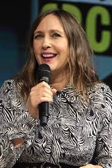
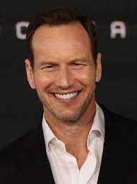
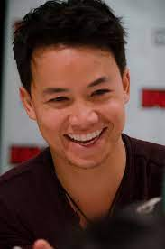
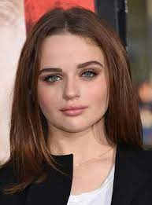
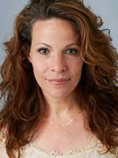
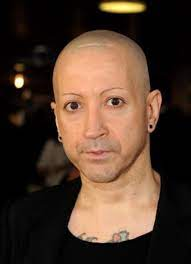

Vera Ann Farmiga é uma atriz, cineasta e produtora estadunidense. Seus créditos no cinema incluem The Manchurian Candidate, Running Scared, The Departed, The Boy in the Striped Pajamas, Orphan, Up in the Air, Source Code, Safe House, The Conjuring e The Conjuring 2

Patrick Joseph Wilson é um ator e cantor estadunidense. Ele começou a carreira em 1995 estrelando musicais da Broadway. Em 2003, estrelou a aclamada minissérie da HBO Angels in America. Atuou em The Alamo, The Phantom of the Opera, Hard Candy, Little Children, Watchmen e The A-Team.

Shannon Kook é um ator sul-africano. É mais conhecido por interpretar Zane Park na série Degrassi: The Next Generation, Drew Thomas no filme Invocação do Mal e Jordan Green na série The 100.

Joey Lynn King é uma atriz norte-americana. Ela ganhou reconhecimento pela primeira vez por interpretar Ramona Quimby no filme de comédia Ramona and Beezus e, desde então, ganhou maior reconhecimento por seu papel principal em The Kissing Booth e suas duas sequências, The Kissing Booth 2 e The Kissing Booth 3.

Lili Anne Taylor é uma atriz norte-americana. Lili Anne Taylor nasceu em Glencoe, Illinois e cresceu no subúrbio de Chicago. Seus pais são Parrk e Marie Taylor. Ela é a segunda mais nova de seis filhos. Três meninos e três meninas. Ela se descreve como sendo um moleque e diz que ela "sempre quis ser um menino."

Joseph Bishara é um cantor, compositor, produtor musical e ator norte-americano. Famoso por Interpretar entidades em filmes de terror como a Bruxa Batsheba em Conjuring, o Demonio Lipstick-Faced na franquia Insidious, o Demonio em Anabelle entre outros
Mackenzie Christine Foy é uma atriz, modelo e dubladora norte-americana. Se tornou famosa por ser escalada para interpretar a personagem Renesmee Cullen, filha dos personagens principais da série Twilight, Edward e Bella, em Amanhecer: Parte 1 e Parte 2.